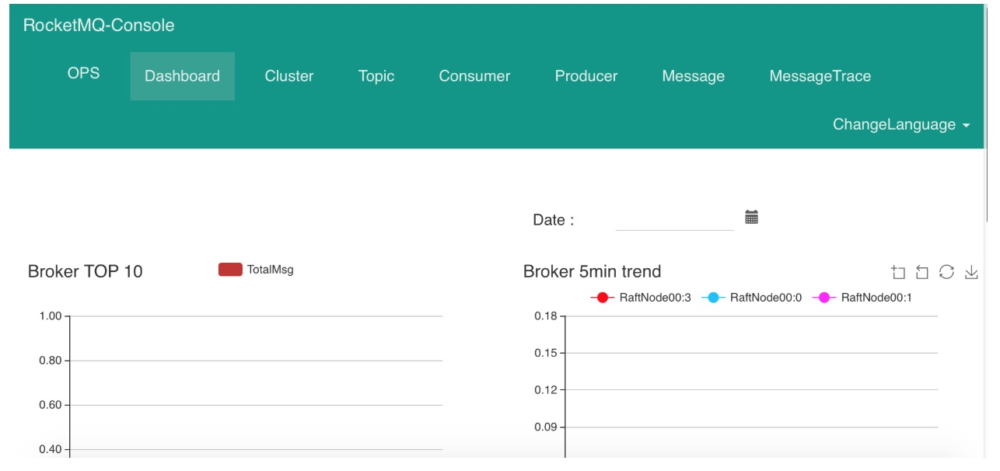
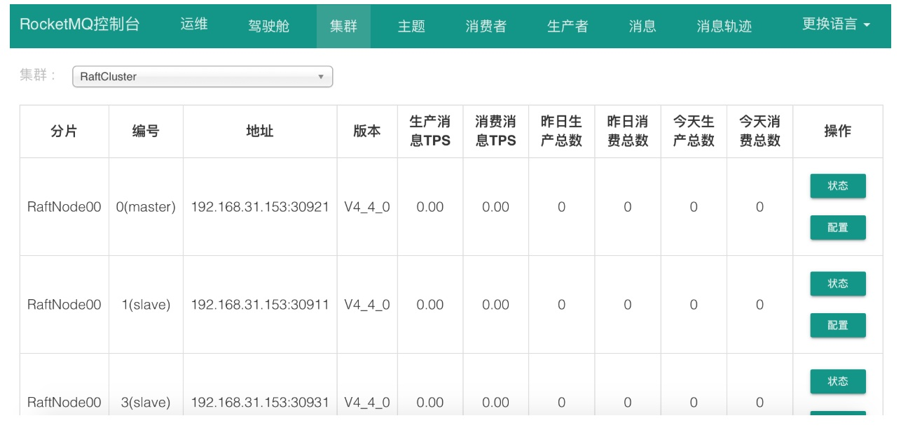
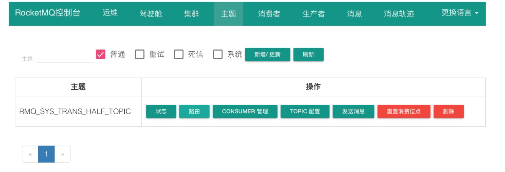
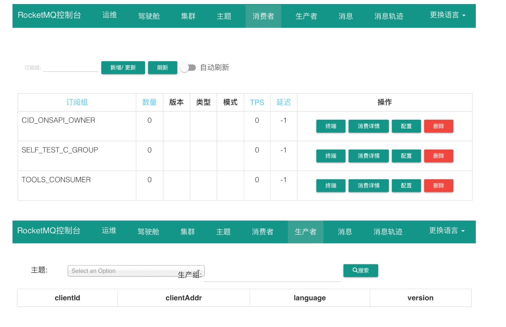
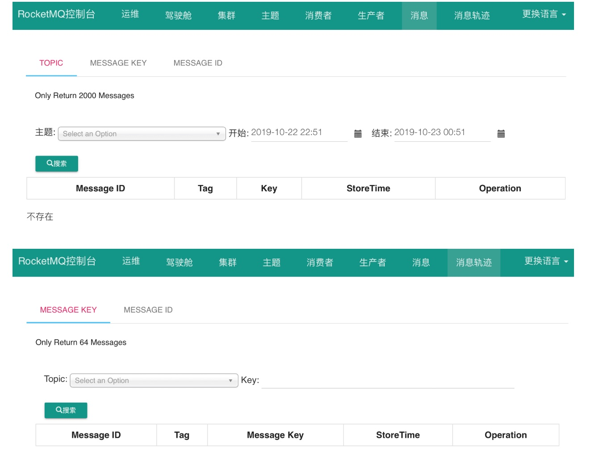

1、小猛在压测前突然有一个困惑
现在RocketMQ集群如何部署都已经知道了，小猛原计划就应该要开始着手优化生产机器上的os内核参数和RocketMQ的jvm参数了，这些参数优化好了，才能正式在高配置机器上启动RocketMQ，让他把性能发挥到最高，接着压测才有意义。
但是小猛在做这些事儿之前突然产生了一个困惑，他在想一个事，如果RocketMQ集群参数正式优化好了然后启动了集群，接着用几台机器跑生产者和消费者去压测，那么压测完了到底要看什么呢？
他想了想，觉得既然是压测，那么必然是要看RocketMQ集群能承载的最高QPS，同时在承载这个QPS的同时，各个机器的CPU、IO、磁盘、网络、内存的负载情况，要看机器资源的使用率，还要看JVM的GC情况，等等。
但是现在有一个问题来了，到底怎么看这些东西呢？
小猛突然发现自己在压测之前还少了一个步骤，那就是应该研究一下RocketMQ集群的监控、管理和运维
比如有什么办法可以看到RocketMQ集群的一些性能指标，有什么办法可以对RocketMQ进行一些运维操作，比如说在集群里加入一台Broker之类的。
好吧，看来自己还有点操之过急了。
小猛赶紧去找了明哥，跟他说了这个情况，跟明哥多申请了一点时间去让他研究RocketMQ集群的监控和运维管理。
2、RocketMQ的大优势：可视化的管理界面
其实大家可以思考一个问题，整个RocketMQ集群的元数据都集中在了NameServer里，包括有多少Broker，有哪些Topic，有哪些Producer，有哪些Consumer，目前集群里有多少消息，等等。
所以如果我们能想办法跑到NameServer里去，自然就可以知道很多东西
但是那不行，因为NameServer并没有对我们打开一扇门让我们进去知道这些东西。
但是RocketMQ里既然有大量的信息可以让我们进行监控和查看，他自然会提供一些办法来让我们看到，这就是他最大的优势之一，一个可视化的管理界面。
我们可以随便找一台机器，用NameServer的三台机器中的任意一台机器就可以，在里面执行如下命令拉取RocketMQ运维工作台的源码：
git clone https://github.com/apache/rocketmq-externals.git
然后进入rocketmq-console的目录：
cd rocketmq-externals/rocketmq-console
执行以下命令对rocketmq-cosole进行打包，把他做成一个jar包：
mvn package -DskipTests
然后进入target目录下，可以看到一个jar包，接着执行下面的命令启动工作台：
java -jar rocketmq-console-ng-1.0.1.jar –server.port=8080 –rocketmq.config.namesrvAddr=127.0.0.1:9876
这里务必要在启动的时候设置好NameServer的地址，如果有多个地址可以用分号隔开，接着就会看到工作台启动了，然后就通过浏览器访问那台机器的8080端口就可以了，就可以看到精美的工作台界面。
3、如何通过工作台进行集群监控
这个可视化的工作台可以说是非常强大的，他几乎满足了我们大部分对RocketMQ集群监控的需求，我们一步一步看看他都有哪些功能。
首先刚进入界面，会看到类似下面的东西：

这个时候大家可能有点懵，其实看看右上角有一个按钮是“ChangeLanguage”，可以支持切换语言的，大家就切换成简体中文就行了。
在这个界面里可以让你看到Broker的大体消息负载，还有各个Topic的消息负载，另外还可以选择日期要看哪一天的监控数据，都可以看到。
接着大家点击上边导航栏里的“集群”，就会进入集群的一个监控界面。

在这个图里可以看到非常有用的一些信息，你可以看到各个Broker的分组，哪些是Master，哪些是Slave，他们各自的机器地址和端口号，还有版本号
包括最重要的，就是他们每台机器的生产消息TPS和消费消息TPS，还有消息总数。
这是非常重要的，通过这个TPS统计，就是每秒写入或者被消费的消息数量，就可以看出RocketMQ集群的TPS和并发访问量。
另外在界面右侧有两个按钮，一个是“状态”，一个是“配置”。其中点击状态可以看到这个Broker更加细节和具体的一些统计项，点击配置可以看到这个Broker具体的一些配置参数的值。
点击上边导航栏的“主题”，可以看到下面的界面，通过这个界面就可以对Topic进行管理了，比如你可以在这里创建、删除和管理Topic，查看Topic的一些装填、配置，等等，可以对Topic做各种管理。

接着点击上边导航栏里的“消费者”和“生产者”，就可以看到访问MQ集群的消费者和生产者了，还可以做对应的一些管理。

接着点击导航栏里的“消息”和“消息轨迹”，又可以对消息进行查询和管理。

大体上这个工作台的监控和管理功能就是这些了，所以大家可以在这里看到，我们这个工作台，就可以对集群整体的消息数量以及消息TPS，还有各个Broker的消息数量和消息TPS进行监控。
同时我们还可以对Broker、Topic、消费者、生产者、消息这些东西进行对应的查询和管理，非常的便捷。
4、机器本身的监控应该如何做？
这里小猛又想到了一个问题：现在有了这个东西，我们是可以在压测的时候看到整个RocketMQ的TPS了，也就是Transaction Per Second，就是每秒事务的意思，在这里就是每秒消息数量的意思。
但是我们要同时看到集群每台机器的CPU、IO、磁盘、内存、JVM GC的负载和情况怎么办呢？
其实这些东西都有很好的监控系统可以去看了，比如说Zabbix、Open-Falcon等等，一般公司都会用这些东西来监控机器的性能和资源使用率。
如果没有这些东西的话，也没关系，在压测的时候完全可以登录到各个Broker机器上去，直接用linux命令行的一些命令来检查这些东西的资源使用率，其实都是可以看到的，包括JVM GC的情况，都是可以通过命令行工具来查看的。